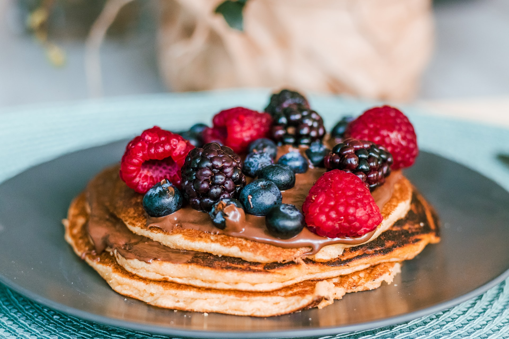

Tillbaka

Recept för pannkakor och plättar
Ingredienser (4 portioner)
- 2 ägg
- 6 dl mjölk
- 2 1/2 dl vetemjöl
- 1/2 - 3/4 tsk salt
- 1 msk smör
Instruktioner
- Vispa äggen i en skål tillsammans med hälften av mjölken. Tillsätt mjölet och vispa till en klimpfri smet. Vispa ner resten av mjölken och saltet. Smält matfettet och blanda ner det i smeten.
- Hetta upp en pannkaks- eller plättlagg på medelvärme. Lägg i lite matfett till första stekningen. Häll ett tunt lager smet i laggen. När ytan stelnat och undersidan fått en fin färg är det dags att vända pannkakan eller plättarna. Stek någon minut på andra sidan.
- Lägg upp pannkakorna på en tallrik, gärna med remsor av smörgåspapper emellan så går de lätt att sära. Plättarna kan läggas i högar.
Tillbaka